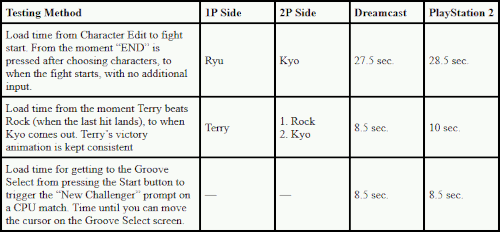

Representative Works: Alien vs. Predator, Street Fighter Alpha series, Darkstalkers series, Marvel vs. Capcom 2, Capcom vs. SNK series
Role: Main Programmer, etc.
Favorite Character: Dhalsim
WE WERE SURPRISED BY HOW QUICKLY THE GAME LOADS.
YAMAZAKI: We put a lot of effort into making the game experience as a whole pleasant. Even just deciding whether to have players select their stage sooner or later has an impact on the load times, so we paid close attention to all those fine points. But of course that leads to bugs (laughs). When you make those kind of small adjustments, it can often feel like 3 steps forward, 2 steps back.
SO CREATING A PLEASANT GAME MEANS REDUCING LOAD TIMES?
YAMAZAKI: That's probably the programming element that has the largest effect on the player. When we're talking about discs?media that needs to physically load data?I feel that people tend to prioritize high-end processing at the cost of load time. Determining what will make a game fun falls under the planner's jurisdiction, but making for a pleasant gaming experience is the job of a programmer. At the beginning of development, getting to a stage took about 30 to 40 seconds, but in the end we managed to reduce it to less than 2 seconds.
This is getting into the weeds a bit, but it's much faster to read one large file than lots of small files. So I'd take files that were originally scattered all over the place from when they were being balanced, and package them together, slowly reducing the load times. But just when I had done that, I got word from the planning department that they wanted to do more balance changes. If I keep unpacking them like this, we'll get more bugs... So I ended up with a 3 hour sleep schedule.
We did have a nap room in the office, but most people just slept in their chairs during development so they could get right back to work as soon as they woke up. There were folks who kept futons and sleeping bags around in my space. That's just how programmers are. If you include the network-related positions, all in all we had 30 programmers tumbling all over the place (laughs).
As we had figured, the easiest version to make was the arcade one. We had plenty of people who had worked on arcade games in the past, so they were pretty used to it. The arcade hardware had very quick read speeds, so we didn't need to worry too much about loading. From the start, we put our focus on making a pleasant, responsive game, so we had no problem moving on to home consoles either. The arcade version would be the most playable, but we got as close to that version as we could using home console disc formats too.
DID YOU HAVE DIFFICULTY DEVELOPING THE ONLINE FUNCTIONS?
YAMAZAKI: I've had experience with developing network functionality on PC, but not much on home systems. It's still a pretty undeveloped area, so there wasn't much out there I could reference. It was basically a lot of trial and error. But we did have a bit of an advantage from having developed online functionality for Marvel vs. Capcom 2. So in that sense, it's been gradually getting easier.
ONE OF THE THINGS YAMAZAKI-SAN LOST SLEEP OVER WAS THE HOME VERSION'S LOAD TIMES. JUST HOW FAST DID HE MANAGE TO GET THEM? WE HERE AT THE EDITORIAL DEPARTMENT COMPARED THE SPEED OF SEVERAL ACTIONS BETWEEN TWO VERSIONS.

(All recorded in arcade mode. Character Edit is on "Ratio Match". "Fight start" was measured by holding up on the stick and recording when the character jumped.)
LASTLY, WHAT WOULD YOU SAY IS A PROGRAMMER'S ROLE IN GAME DEVELOPMENT?
Yamazaki: Something like "linking people and hardware". The enjoyment you have when you're playing a game is a very analog sensation. It's up to us programmers to express that phenomenon in digital form.
Planners are always making these absurd, "analog" requests. But being able to recreate them in game form, coming as close to the intent of the planners as we can, is the most important thing of all, and where we place the most focus. So when a planner goes "it should be like, ÅeGO!!'" or "make that feel better", those kind of expressions or sense driven concepts, we ask ourselves "how can we express that in a program?". And that's where the true skill of a programmer comes in.
And then the last thing is a sense of responsibility. Programming takes the rear in game development. Don't let any bugs pass through! We're like the anchor in the battlefield of game development... But even with that being the case, bugs still happen (laughs). Perhaps someday we can have a world without bugs...